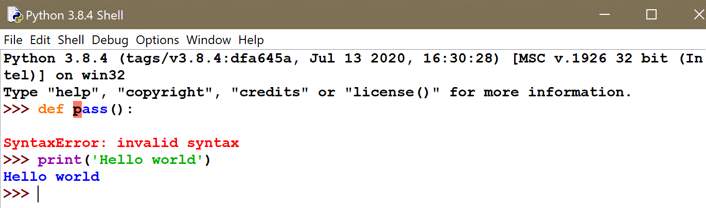

IDLE’s shell¶
Summary
friendly has a special mode for IDLE. It is strongly recommended to use the friendly console by using the following two instructions when beginning a session:
from friendly.idle import start_console
start_console()
As I mentioned previously, IDLE comes with its own repl (also known as its “shell”) which does syntax coloring. By default, it uses blue for anything printed normally (to stdout) and red for anything printed as part of an exception (to stderr). When a SyntaxError is recognized, the location of that error is highlighted, with red background.
{kind=link}
You can use the friendly console within IDLE’s shell as follows:
from friendly.idle import start_console
start_console() # or start_console(lang="fr")

As you can see as pointed by (2) on the above image,
the prompt is in blue as it is “printed”by friendly
using the input() function.
Friendly’s output within IDLE uses three different colours which, in the default IDLE theme are as follows: black for Python code, red for anything else related to a traceback, and blue for everything else. It also adopts IDLE’s feature of highlighting the location of an error using a red background; however, unlike IDLE’s itself, it does not do so in the code entered previously, but only in its own output.
Latest IDLE version¶
Starting with Python version 3.10.0a5, IDLE’s shell allow the
use of customs sys.excepthook() to process runtime
errors (but not syntax errors). So, instead of starting
a friendly console using start_console(), friendly can
be installed within IDLE’s shell and provide information
for runtime errors.
This time, instead of importing a single function,
“everything” must be imported, so that friendly’s various functions,
such as why() shown below, can be used.
from friendly.idle import *
install()

Note how the prompt is not blue as we are not using friendly’s own console.
Unfortunately, since syntax errors cannot (yet) be processed by friendly in this mode, I do not recommend to use it in this way.
IDLE’s developers are aware of this current limitation and might provide in a future version a way for friendly to “hook” into IDLE’s mechanism for dealing with syntax errors.